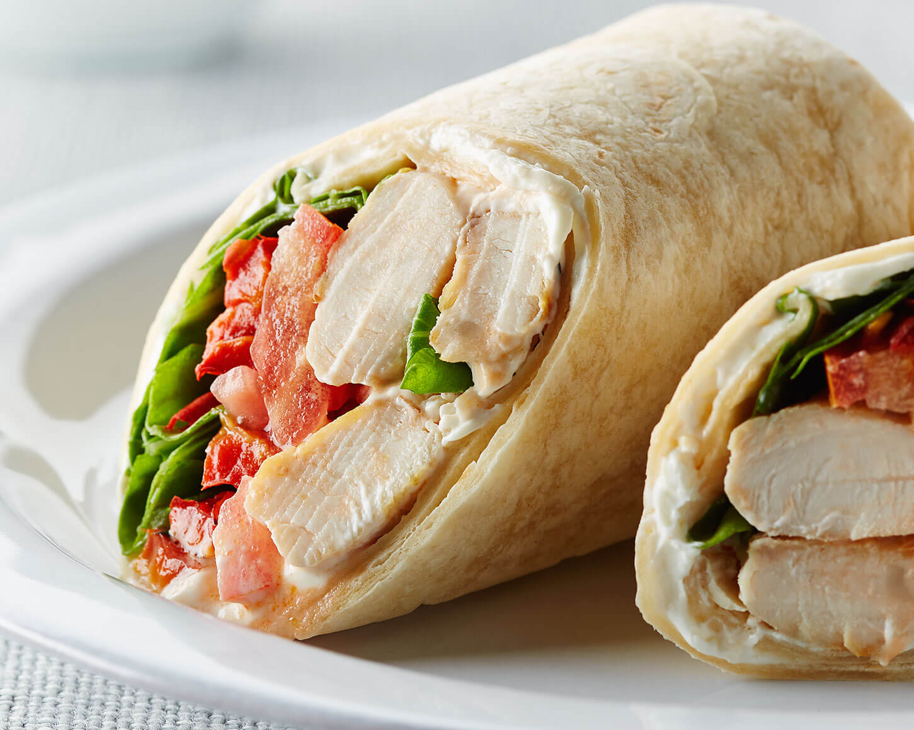

op techniek college Rotterdam is de kantine is een deel van de school waar studenten kunnen
hangen tijdens de pauzens
zij halen meestal snacks en eten daar.
in de kantine staat een snack automaat, een Koffie apperaat en een kleine winkeltje
waar je eten kunt halen. Er zijn veel dingen die je kunt eten daar zoals: een chicken wrap, een burger
etc. omdat veel van onze studenten moslims zijn hebben wij er voor gezorgd dast er ook halal eten in deze selectie zit
is dus kunnen de muslims op school ook daar eten.
in de kantine worden ook vaak evenementen gehouden zoals tijdens de introductie week
toen we E-sporten deden en we personeel van een beveiligings bedrijf kwamen.
